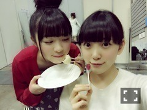

2015/0206Fri満タン→万端
今日の朝
私が残しておいた大好きな大好きな
安納芋が今朝冷蔵庫に入っていなくて...
楽しみにしていたものだし
食べた記憶もないから
あれおかしいなぁって思って
探していたら
何と私の姉がソファに座って
優雅に安納芋を食べてたの‼︎
それからふてくされていたら
755見たお姉ちゃんが焦って
わざわざ買ってきてくれました笑
もう許したよ(,,•﹏•,,)笑
仲良しだけどよく喧嘩するの。
しょうもない？事で振り回して
ごめんなさい

綺麗な貝みっけ‼︎
小さい貝殻も見つけたの♪
穴開けてネックレスにしようかな〜
休憩時間、必死に屈んで貝殻を
探していたら
松村さんにみおたん何してるの？って
言われて
貝を探してるんです！
私は貝になりたい、、
って言ったら
めっちゃ笑ってくれました笑
最近は寒い場所での撮影が多いけど
みんなでギューってしながら
温まって頑張っていますヽ(*・ω・*)ﾉ

太陽？月？
よく分からないけど
なんか丸いものと(｡･ω･｡)
熱いお風呂に浸かる
髪を乾かす
コーヒー牛乳を飲む
歯を磨く
次の日の洋服を決める
0時20分に布団に入る
部屋の電気を消す
とある日の私の家に帰ってから
寝るまでの流れ。
なかなか布団に入ってから
寝れないけど...
寝ても怖い夢を頻繁に見るし...
でもたまにファンタジーチック
で可愛い夢も見ます☆
前は私がお菓子の国で
お菓子を次々に開発してみんなに
未央奈様のお菓子は世界一です！
って言われてなぜか頭の上に
いちご大福を乗せた私がお城の
ベランダで手を振りながら
けらけら笑っていました

よく分からない瞬間を
撮られた
最近私がback numberさん好き
でよく聴くっていう話をブログ
とか755でしていたら
ファンの方が聴いてみたら好きになったよ
ってコメントとかで言って下さって
何か嬉しいです♩
他には
ONE DIRECTION
Mcfly
Blue
Backstreet Boysが好きかな

告知
発売中
◎POKER FACE
◎読売中高生新聞
◎UTB未公開グラビア◎Ray
◎street JACK
◎FLASHスペシャル 2015新年号
◎月刊エンタメ未公開グラビア
◎EYESCREAM
◎日経エンタテインメント！
◎CDでーた
◎グラビアザテレビジョン
◎読売中高生新聞
◎ENTAME
◎2/9発売 BOMB
→初、日奈子とのグラビア！
堀北コンビ♡
TV
◎2/7 伝えてピカッチ
2回目の出演です！
◎2/7 23:30〜0:00 乃木坂46 SHOW！
メイドのコントとオープニングの
コントは白石さんと
出させていただきました！
楽しかった〜♡
頑張ったので見てください！
明日は忙しいですよ(,,•﹏•,,)？
ラジオ
◎2/10〜 全国ファミリーマートにて
深川さんとファミラジを
してきました！
沢山流れると思うので
よろしくお願いします♡
まったり食べ物大好き姉妹♡
以上
大好きなジブリのお店へ
行ってきました！
店内にもジブリの曲が流れていて
もうあまりにも幸せで
ずっと目を輝かせながら
いろんなものを見てきました
特に魔女宅コーナーが素敵♩
トトロとメイちゃん
スタジオジブリの世界が好き。
好きすぎて生まれ変わるならジブリの
登場人物になりたい٩꒰｡•◡•｡꒱۶



大食いシスターズ！
最後に...
みなみ誕生日おめでとう♡♡♡
気合い入れすぎちゃって23:59に
メールしちゃった笑
みなみにはメールしたから
ブログに詳しくは書かないけど...
いつも私のそばにいてくれて
ありがとう。
これからもずっと一緒にいてね(｡･ω･｡)
大好き！
私のシンメはずっとみなみ♪

そして畠中さんの卒業が
発表されました。
可愛がってくださった先輩や
一緒に頑張ってきた同期がいなく
なるのはやっぱり寂しいな...
でも畠中さんが決めた事やもん！
私が何か言った所で変わらないし...
いつも会うたびに未央奈、元気？
どう？って聞いてくださったり
ハグしてきたり可愛い畠中さん。
またご飯行きたいです！
残りの期間、たくさんたくさん
話せたらいいな！

今日は猫の恩返しと
ウォーキングデッド観ようかな♩
明日の握手会も楽しみ！
衣装、何を着よう？
寒いみたいなので暖かくしてきて
下さいね...>_<...
ではではおやすみおな(ヽ´ω`)
2015/02/06 20:54
コメント(615)
McFLYが出てきたことにびっくりして初コメです！
McFLYはぼくがこの世で1番愛してるバンドなんです^ ^
みおなちゃんは好きな曲ありますか？
ぼくはLove is easy と Room on the 3rd floor がおすすめです！
McFLYはぼくがこの世で1番愛してるバンドなんです^ ^
みおなちゃんは好きな曲ありますか？
ぼくはLove is easy と Room on the 3rd floor がおすすめです！
未央奈ちゃんぶちかわいいです！♡おもしろいしいつか会いたいと思っております！応援してます！
1部終わりにコメント
想像できるよ
ファンの人のやじコメの「大丈夫？」とか「どうしたの？」とか心配するコメント見てにやにやしてる未央奈を(笑)
とりあえず食べ物への執着心ハンパないな(^^;
今日の乃木坂46SHOW楽しみだー
2日連続握手会って大変だよね
俺らからしたら嬉しいけど
最近仕事忙しそうだったし体調崩さないことを祈ります。
想像できるよ
ファンの人のやじコメの「大丈夫？」とか「どうしたの？」とか心配するコメント見てにやにやしてる未央奈を(笑)
とりあえず食べ物への執着心ハンパないな(^^;
今日の乃木坂46SHOW楽しみだー
2日連続握手会って大変だよね
俺らからしたら嬉しいけど
最近仕事忙しそうだったし体調崩さないことを祈ります。
未央奈ちゃん！
かわいい！
乃木坂46show！楽しみヾ(＠⌒ー⌒＠)ノ
ちゃんとみるよ~
かわいい！
乃木坂46show！楽しみヾ(＠⌒ー⌒＠)ノ
ちゃんとみるよ~
堀ちゃんおつかれ♪
映画大好き、ベビージーです♪(´ε｀ )
明日の握手会、4部に遊びに行きます^_^
短い時間だけど、よろしくねー(^O^)
コメ欄みたいに師匠って呼んでいい？笑
初握手なんでテンパって言えないと思うけど♪(´ε｀ )
ではまた♪完
映画大好き、ベビージーです♪(´ε｀ )
明日の握手会、4部に遊びに行きます^_^
短い時間だけど、よろしくねー(^O^)
コメ欄みたいに師匠って呼んでいい？笑
初握手なんでテンパって言えないと思うけど♪(´ε｀ )
ではまた♪完
１Ｄはまぁあれとして…Backsも超メジャーだし…でもMcflyとかBLUEとかよく知ってるなぁ(´⊙ω⊙`)
ちなみにBLUEは昔乃木坂が大感謝祭やった国際フォーラムにライヴ観に行った事あるよ٩( 'ω' )و
ちなみにBLUEは昔乃木坂が大感謝祭やった国際フォーラムにライヴ観に行った事あるよ٩( 'ω' )و
みおなちゃん！(^^)
46回目のコメント♪( ´▽｀)
ふぉーてぃーしっくす！！
こんにちは！
安納芋事件だったんですね！
喧嘩するほど仲がいい！！
お菓子の国の夢面白い笑
乃木坂46show！のオープニング楽しみだなあ♪
みおなちゃんがジブリに出てそうだと
思うのは僕だけでしょうか？
みなみおな好きだ！
みなみhappybirthday！
せいたん卒業までまだあるから
笑顔で送り出せるように。
握手会お疲れ様です！
46回目のコメント♪( ´▽｀)
ふぉーてぃーしっくす！！
こんにちは！
安納芋事件だったんですね！
喧嘩するほど仲がいい！！
お菓子の国の夢面白い笑
乃木坂46show！のオープニング楽しみだなあ♪
みおなちゃんがジブリに出てそうだと
思うのは僕だけでしょうか？
みなみおな好きだ！
みなみhappybirthday！
せいたん卒業までまだあるから
笑顔で送り出せるように。
握手会お疲れ様です！
back numberいいねぇー
ちなみにUVERworldもオススメだよ！
ちなみにUVERworldもオススメだよ！
みおなちゃん可愛い！
これからも応援してます!!
これからも応援してます!!
みおなさん
せいらさんへの気持ち伝えてくれてありがとう
仲の良い乃木坂が大好きです
11ｔｈ頑張って！！
せいらさんへの気持ち伝えてくれてありがとう
仲の良い乃木坂が大好きです
11ｔｈ頑張って！！
堀さん、こんにちは。
安納芋、お姉さんに買ってもらえてよかったですね。お姉さんの焦っている様子が目に浮かんできて微笑ましいです。
もうね、冷蔵庫に入れるケーキとか大福とかにはマジックで名前書いておきましょ（←書いちゃだめ）。
二枚目の写真、何となく映画『スターウォーズ』みたいで好き。なんか丸いものは何でしょう。万理華さんかな（←違います）。
今宵は『伝えてピカッチ』に堀さん二度目の見参！出るか、前回のコアラに続く「今週の逸品」。楽しみなことです。
ではまたコメントします。
さらばだ、また会おう！（気球に乗って去る〜）
安納芋、お姉さんに買ってもらえてよかったですね。お姉さんの焦っている様子が目に浮かんできて微笑ましいです。
もうね、冷蔵庫に入れるケーキとか大福とかにはマジックで名前書いておきましょ（←書いちゃだめ）。
二枚目の写真、何となく映画『スターウォーズ』みたいで好き。なんか丸いものは何でしょう。万理華さんかな（←違います）。
今宵は『伝えてピカッチ』に堀さん二度目の見参！出るか、前回のコアラに続く「今週の逸品」。楽しみなことです。
ではまたコメントします。
さらばだ、また会おう！（気球に乗って去る〜）
堀未央奈ちゃんへ
安納芋好きなのか？
スーパーの食品売場で店頭販売していて主婦が何個か買っていくのをよく見かける。
安納芋をお姉ちゃんに食べられてイジける未央奈。
でも、気遣ってくれるところは流石はお姉ちゃんやな。
純奈のブログでさぁ、2期生たちの性格について書いていたのよ。
そしたら、未央奈は強がりな甘えん坊さんだってよ。
ホントか？（笑）
お仕事でもプライベートでもみなみ（星野みなみちゃん）と一緒にいる時が多いよな。
そんなベッタリとしたところがそうなのかもな（笑）
『伝えてピカッチ』（NHK総合）
もしかしたらリアルタイムで観るかも。
Kackey
安納芋好きなのか？
スーパーの食品売場で店頭販売していて主婦が何個か買っていくのをよく見かける。
安納芋をお姉ちゃんに食べられてイジける未央奈。
でも、気遣ってくれるところは流石はお姉ちゃんやな。
純奈のブログでさぁ、2期生たちの性格について書いていたのよ。
そしたら、未央奈は強がりな甘えん坊さんだってよ。
ホントか？（笑）
お仕事でもプライベートでもみなみ（星野みなみちゃん）と一緒にいる時が多いよな。
そんなベッタリとしたところがそうなのかもな（笑）
『伝えてピカッチ』（NHK総合）
もしかしたらリアルタイムで観るかも。
Kackey
初めてみおなのブログにコメントする(>_<)
今度から毎回させてもらうかも♪
みおな昔のぎどこで涙流す企画の時も、明太子食べられた っていうこと思い出して泣こうとしてなかったっけ？？
今回も食べ物食べられて拗ねちゃったんだね(>_<)笑
そんなみおなかわいいけど、実際楽しみにしてたもの食べられたら結構悲しいよね(>_<)
でもお姉ちゃん買ってきてくれて、みおな元気に戻って良かった(#^_^#)笑
今日握手会1部に行ったよ♪
まだ握手会行くの3日目だったけど、「久しぶりにきてくれた？」って言ってくれてすごく嬉しかった(#^_^#)
ありがとね(*^o^*)
でも自分緊張しちゃうから、言葉ボソボソしゃべっちゃってみおなにちゃんと聞こえなくてごめんね(*_*;
聞こえなかったら耳傾けてもう1回聞き直してくれて、ちゃんと対応してくれていて優しいなって思った(#^_^#)
自分はもっとしっかり話せるように＆気が利いた話できるようにもっと頑張ります(>_<)
長文書いてごめんなさい(>_<)
今度のイベントのバースデーライブ楽しみにしてるね♪
今度から毎回させてもらうかも♪
みおな昔のぎどこで涙流す企画の時も、明太子食べられた っていうこと思い出して泣こうとしてなかったっけ？？
今回も食べ物食べられて拗ねちゃったんだね(>_<)笑
そんなみおなかわいいけど、実際楽しみにしてたもの食べられたら結構悲しいよね(>_<)
でもお姉ちゃん買ってきてくれて、みおな元気に戻って良かった(#^_^#)笑
今日握手会1部に行ったよ♪
まだ握手会行くの3日目だったけど、「久しぶりにきてくれた？」って言ってくれてすごく嬉しかった(#^_^#)
ありがとね(*^o^*)
でも自分緊張しちゃうから、言葉ボソボソしゃべっちゃってみおなにちゃんと聞こえなくてごめんね(*_*;
聞こえなかったら耳傾けてもう1回聞き直してくれて、ちゃんと対応してくれていて優しいなって思った(#^_^#)
自分はもっとしっかり話せるように＆気が利いた話できるようにもっと頑張ります(>_<)
長文書いてごめんなさい(>_<)
今度のイベントのバースデーライブ楽しみにしてるね♪
かわいいー(ت)♪
応援してるょ！
応援してるょ！
今夜の伝えてピカッチと乃木坂46SHOW!観ますよー♪
未央奈ちゃんの活躍を目に焼き付けます♪☆
未央奈ちゃんの活躍を目に焼き付けます♪☆
みおなとれなちかわいい！♡
二期生で2人が1番すき！♡♡
はやく握手会行きたいな。！♡♡♡
みおなのためにがんばる♡♡♡♡
二期生で2人が1番すき！♡♡
はやく握手会行きたいな。！♡♡♡
みおなのためにがんばる♡♡♡♡
みおなちゃん(*´罒`*)！
今日ありがとう！仕事で行けるかわからないから
2枚しかとってなかったんだけど( ´∵｀)
久しぶりにみおなちゃんに会えてとっても嬉しかったよ！
昨日したコメントなくなってたから
ジブリ生まれ変わったら誰になりたいかの話が出来てよかった(*´罒`*)私はオソノさんの子供て言ったんだけど覚えてるかな(∩❛ڡ❛∩)？みおなちゃんは耳をすませばなんだよね！実写化したらしずくみおなちゃんにやってほしい！似合うもん！やらないかな〜
あとは755の話！みおなちゃんのご飯話がいつもお腹すいてしまう話。みおなちゃんの食との葛藤が癒しです！いっぱい食べてね！(∩❛ڡ❛∩)
くららオススメの映画を紹介、ジブリ大好きだからジブリ
熱く語りたい所だけど、「ディスタービア」をオススメします！
アニメじゃなくて洋画だけど、主演はトランスフォーマーの主演俳優さん！ヒロインは抜群に綺麗だし、何よりストーリーが面白い！サスペンスホラー？て言うのかな？めちゃくちゃオススメなので是非見てね(o^^o)！
11thの作品！楽しみにしてるね！握手会も行きます٩(｡•ω•｡)و
今日はありがとう(*´罒`*)
今日ありがとう！仕事で行けるかわからないから
2枚しかとってなかったんだけど( ´∵｀)
久しぶりにみおなちゃんに会えてとっても嬉しかったよ！
昨日したコメントなくなってたから
ジブリ生まれ変わったら誰になりたいかの話が出来てよかった(*´罒`*)私はオソノさんの子供て言ったんだけど覚えてるかな(∩❛ڡ❛∩)？みおなちゃんは耳をすませばなんだよね！実写化したらしずくみおなちゃんにやってほしい！似合うもん！やらないかな〜
あとは755の話！みおなちゃんのご飯話がいつもお腹すいてしまう話。みおなちゃんの食との葛藤が癒しです！いっぱい食べてね！(∩❛ڡ❛∩)
くららオススメの映画を紹介、ジブリ大好きだからジブリ
熱く語りたい所だけど、「ディスタービア」をオススメします！
アニメじゃなくて洋画だけど、主演はトランスフォーマーの主演俳優さん！ヒロインは抜群に綺麗だし、何よりストーリーが面白い！サスペンスホラー？て言うのかな？めちゃくちゃオススメなので是非見てね(o^^o)！
11thの作品！楽しみにしてるね！握手会も行きます٩(｡•ω•｡)و
今日はありがとう(*´罒`*)
こんにちは。
寒いなか撮影お疲れ様♪
月かな、太陽かな、それとも
金星？。。。。。にしては
大きいか。
ジブリのお店楽しそう♪
そういえば、日テレショップの
二階にもジブリコーナーが
あったな。
では、(^-^)/ね。
寒いなか撮影お疲れ様♪
月かな、太陽かな、それとも
金星？。。。。。にしては
大きいか。
ジブリのお店楽しそう♪
そういえば、日テレショップの
二階にもジブリコーナーが
あったな。
では、(^-^)/ね。
いろんな意味で、頑張ってね！
納得いきませんてそれだったのね笑
ほんとお姉ちゃんと仲良いねー
ネックレス作ったん？もし作ってたら握手会でつけてほしいです♪
みおたんって呼ばれてたんだ笑
みなみおな最高！！！！
ほんとお姉ちゃんと仲良いねー
ネックレス作ったん？もし作ってたら握手会でつけてほしいです♪
みおたんって呼ばれてたんだ笑
みなみおな最高！！！！
755見た時はすごい心配したけど、安納芋のことだったんですね〜すごい深刻な想像をしてました(-｡-;
明日の握手会参加させていただくので、よろしくお願いします(￣^￣)ゞ
目印は名前のまんまです(笑)
明日の握手会参加させていただくので、よろしくお願いします(￣^￣)ゞ
目印は名前のまんまです(笑)
未央奈！
四枚目の写真！
未央奈ってカラコン入れてるの？
違ったらごめんね<(_ _)>
未央奈の755見て『未央奈どうした！』って思ったけど、あとあと『食べ物のことで…』って未央奈が言ってたから一安心。
いやでも、私も食べ物とられたら怒るヽ(｀Д´#)ﾉ
みなみおな大好き( ^^)♡
ずっと仲良くしててほしいです！
はぐみ
四枚目の写真！
未央奈ってカラコン入れてるの？
違ったらごめんね<(_ _)>
未央奈の755見て『未央奈どうした！』って思ったけど、あとあと『食べ物のことで…』って未央奈が言ってたから一安心。
いやでも、私も食べ物とられたら怒るヽ(｀Д´#)ﾉ
みなみおな大好き( ^^)♡
ずっと仲良くしててほしいです！
はぐみ
堀ちゃんもウォーキングデッド観るの⁉︎自分も今ジーズン3観てるよ！
お仕事頑張ってね
お仕事頑張ってね
こんにちは～( *・ω・)ノ
握手会、、お疲れさま～
海辺の近くで、撮った、写メ、、不思議な感じだね。。(^ω^)
～２つの太陽、、あるいは、月。。
と、いう表題かな。。(^ω^)
この球体が、月で、、夢の中の話なら(^ω^)、、
～月は、信じない。。月の美しさも、、、
～かぐや姫は、、消えることになる。。
って、、夢の中で、みおちゃんが、言う。。(^ω^)
未来世界では、、美少女の、クロ－ン型・殺戮マシ－ンが、かぐや姫と、呼ばれて、いて、みおちゃんが、それと、戦っている設定。。(^ω^)(笑)
じゃあ、、またね～(´・ω・`)/~~
握手会、、お疲れさま～
海辺の近くで、撮った、写メ、、不思議な感じだね。。(^ω^)
～２つの太陽、、あるいは、月。。
と、いう表題かな。。(^ω^)
この球体が、月で、、夢の中の話なら(^ω^)、、
～月は、信じない。。月の美しさも、、、
～かぐや姫は、、消えることになる。。
って、、夢の中で、みおちゃんが、言う。。(^ω^)
未来世界では、、美少女の、クロ－ン型・殺戮マシ－ンが、かぐや姫と、呼ばれて、いて、みおちゃんが、それと、戦っている設定。。(^ω^)(笑)
じゃあ、、またね～(´・ω・`)/~~
みおな♪
今日3部で握手させていただきました、受験生のゆうまです！
みおなのおかげでめっちゃやる気出ました！！
絶対に合格の報告行くからね！
みおなのおかげでめっちゃやる気出ました！！
絶対に合格の報告行くからね！
明太子と同じかー笑
何事かと思った笑笑
お姉ちゃんが明太子を優雅に丸ごと１本食べてたら笑えたかも。
誕生日メールっていつもフライングしてるような気がする。
前にもこんなのを見たような
何事かと思った笑笑
お姉ちゃんが明太子を優雅に丸ごと１本食べてたら笑えたかも。
誕生日メールっていつもフライングしてるような気がする。
前にもこんなのを見たような
握手会、3部行きました〜！
先週行ったことを覚えてくれてて凄い嬉しかったです〜♡♡！
本当に堀ちゃんの私服大好きなので伝えられて良かったです〜！！
堀ちゃんにぱっつんを可愛いって言ってもらえたので流そうと伸ばしてたんですけどぱっつんに戻そうと思います〜！！笑
次は11thのときに行きます！！
堀ちゃんかわいくて本当に大好きです♡
先週行ったことを覚えてくれてて凄い嬉しかったです〜♡♡！
本当に堀ちゃんの私服大好きなので伝えられて良かったです〜！！
堀ちゃんにぱっつんを可愛いって言ってもらえたので流そうと伸ばしてたんですけどぱっつんに戻そうと思います〜！！笑
次は11thのときに行きます！！
堀ちゃんかわいくて本当に大好きです♡
握手会お疲れ様です。今日は握手会に行けてとっても楽しかったよ。久々に未央奈ちゃんに会えた。ガッキーのバラッドは、とても楽しいので是非探してみてください。あれは、クレヨンしんちゃんの映画を実写化したやつです。あと伝えてピカッチ取り忘れました。ごめんなさい
食べようとしてて、楽しみにとっておいたものを食べられてしまったときのあの残念な感じ…
すごくわかります( →_→)
でも、買ってきてくれれば全然OKですよね♪
ファミラジ楽しみ！！！
コメント反映されてないのかな(°д°)
バレッタの服着たみおながすごくにあっててなんだか当時のことを思い出したよ･･･笑 年下だけど笑
またフロントにいるみおながみたいな(*ﾟ▽ﾟ)ﾉ
あとこないだは755で返信ありがとう！＼(^^)／
これからもブログも755もコメントするねー
バレッタの服着たみおながすごくにあっててなんだか当時のことを思い出したよ･･･笑 年下だけど笑
またフロントにいるみおながみたいな(*ﾟ▽ﾟ)ﾉ
あとこないだは755で返信ありがとう！＼(^^)／
これからもブログも755もコメントするねー
堀さん、スカイダイビングは分かるでしょ？
伝えてピカッチ見ました!!かなりありがとうございます。美人でありがとうございます。お仕事頑張って下さい！
握手会お疲れさま!
少しだけで短い時間だったけど楽しかったよ♪
みおなのバレッタ制服見れて良かった( ☆∀☆)
明日も寝坊せず1部から必ず行きます！
おやすみおな(^-^ゞ
未央奈、こんばんは。
芋騒動、大変だったねw
びっくりしたけど、みおならしいよ！
そんな未央奈を微笑ましくいつも見てます！
大食いシスターズって、みりあ？
大食いなんだねwみりあw
せいたんの卒業は、自分の仲間の中で大きなニュースで、大騒ぎになったよ。
みんなで最後まで応援する！
あと、何空さいごの個別、おじゃまするね。
NOGUCCI（のぐっちだよw）をよろしくw
芋騒動、大変だったねw
びっくりしたけど、みおならしいよ！
そんな未央奈を微笑ましくいつも見てます！
大食いシスターズって、みりあ？
大食いなんだねwみりあw
せいたんの卒業は、自分の仲間の中で大きなニュースで、大騒ぎになったよ。
みんなで最後まで応援する！
あと、何空さいごの個別、おじゃまするね。
NOGUCCI（のぐっちだよw）をよろしくw
堀ちゃんお疲れ様ー♪
明太子事件を思い出した(笑)
ウォーキングデッドはウォーカーよりも
人間の方が怖いよね_:(;'Θ' ;;」 ∠):_
明太子事件を思い出した(笑)
ウォーキングデッドはウォーカーよりも
人間の方が怖いよね_:(;'Θ' ;;」 ∠):_
未央奈～
なかなか寝られんの？
それにコワイ夢かぁ・・・
色々考え事・悩み事があったり
ストレスが溜まってるでしょ？
寝る前に
ホットミルクかホットココア飲んでみたらどう？
寝る前に冷たいものを飲んだり
カフェインが多いものを飲むと寝にくくなるよ。
あとは
寝る前にスマホいじってるとか・・・
脳への刺激が強いものは
脳を興奮状態にしちゃうからアウトだよ
コワイ夢はね
ストレスになってることを
夢の中で色々と整理したり解消したりするためだから
その原因になってることがおさまらないとね・・・
夢のおかげでストレスが多少軽減されてる
ってこともあるからちょっとガマン・・・かな
（同じ夢を見るのかな？？）
今の自分、とか
この先の自分、とか
色々考えること、悩むことがあるときだと思うけど
年齢的にそういうときだからね。
ピカッチ見たよ～～
井森のアクが強すぎ・・・
西村知美や直美さんの存在感も薄れるし・・・
今回、
女性陣はかなり“濃いめ”だったけど
ああいう中で如何に存在感を出せるか、が
勉強のしどころかもね。
というか、
乃木坂のメンバー一人ずつじゃなくて
女性陣ゲストに3人まとめて
乃木坂のメンバー出してくれれば良いのに
って思ったんだけど。
乃木坂46SHOWも見るよ～～
楽しみ
なかなか寝られんの？
それにコワイ夢かぁ・・・
色々考え事・悩み事があったり
ストレスが溜まってるでしょ？
寝る前に
ホットミルクかホットココア飲んでみたらどう？
寝る前に冷たいものを飲んだり
カフェインが多いものを飲むと寝にくくなるよ。
あとは
寝る前にスマホいじってるとか・・・
脳への刺激が強いものは
脳を興奮状態にしちゃうからアウトだよ
コワイ夢はね
ストレスになってることを
夢の中で色々と整理したり解消したりするためだから
その原因になってることがおさまらないとね・・・
夢のおかげでストレスが多少軽減されてる
ってこともあるからちょっとガマン・・・かな
（同じ夢を見るのかな？？）
今の自分、とか
この先の自分、とか
色々考えること、悩むことがあるときだと思うけど
年齢的にそういうときだからね。
ピカッチ見たよ～～
井森のアクが強すぎ・・・
西村知美や直美さんの存在感も薄れるし・・・
今回、
女性陣はかなり“濃いめ”だったけど
ああいう中で如何に存在感を出せるか、が
勉強のしどころかもね。
というか、
乃木坂のメンバー一人ずつじゃなくて
女性陣ゲストに3人まとめて
乃木坂のメンバー出してくれれば良いのに
って思ったんだけど。
乃木坂46SHOWも見るよ～～
楽しみ
みおなちゃん、こんばんは～！
安納芋ちゃんと食べられて良かったね。
みおなちゃんの見る夢はなかなかユニークだね。頭に苺大福乗せたみおなちゃん想像しただけで可愛い！
今日の握手会で久しぶりにみおなちゃんに会えて楽しかったよ♪
今から次の握手会が楽しみだなぁ～(笑)
安納芋ちゃんと食べられて良かったね。
みおなちゃんの見る夢はなかなかユニークだね。頭に苺大福乗せたみおなちゃん想像しただけで可愛い！
今日の握手会で久しぶりにみおなちゃんに会えて楽しかったよ♪
今から次の握手会が楽しみだなぁ～(笑)
乃木坂４６１番推しメンです♡(*´艸`)
ポスターと透明な色のＢを持ってます♡ヽ(*´∀｀)ノ
今度福岡に握手会来たら行きます♡(*･з･*)
あと、１ヶ月で中学生…(T_T)
寂しいです…｡ﾟ(ﾟ´Д`ﾟ)ﾟ｡なぞの落書きを聞いて癒されています♡(♡˙︶˙♡)
✩質問✩
みおなちゃんは料理しますか(*´・д・)？
ポスターと透明な色のＢを持ってます♡ヽ(*´∀｀)ノ
今度福岡に握手会来たら行きます♡(*･з･*)
あと、１ヶ月で中学生…(T_T)
寂しいです…｡ﾟ(ﾟ´Д`ﾟ)ﾟ｡なぞの落書きを聞いて癒されています♡(♡˙︶˙♡)
✩質問✩
みおなちゃんは料理しますか(*´・д・)？
これからもずっと堀ちゃん推しでいくからね。
せっかく、特攻服作ったから着なきゃね。
せっかく、特攻服作ったから着なきゃね。
くろねこ٩( 'ω' )و です
755のコメ返信ありがとう＼(^^)／
みおなバレッタ衣装めっちゃ似合うよね
イメージぴったり！当時はさすがに衝撃的だったけどねw
755のコメ返信ありがとう＼(^^)／
みおなバレッタ衣装めっちゃ似合うよね
イメージぴったり！当時はさすがに衝撃的だったけどねw
みおなー
ピカッチ見たよ(￣▽￣)
やっぱりみおなかわいかった(＾ｰ^)ノ
姉もこの子すごい透明感だね~っていってた笑
早く大学受かって会いに行きたいなーって思う！
九州だからなかなかいけないけどね
とりあえず、みおな風邪ひかないように！
一日お疲れ様(^ー゜)！！
ピカッチ見たよ(￣▽￣)
やっぱりみおなかわいかった(＾ｰ^)ノ
姉もこの子すごい透明感だね~っていってた笑
早く大学受かって会いに行きたいなーって思う！
九州だからなかなかいけないけどね
とりあえず、みおな風邪ひかないように！
一日お疲れ様(^ー゜)！！
伝えてピカッチ観たよ！
クラッカーかぁ
クッキーかと思った(>_<)
クラッカーかぁ
クッキーかと思った(>_<)
NHKの伝えてピカッチ見ましたよ!
「何で落ち着いてるの」とか「もっと必死にならないの」とか突っ込まれていましたね!
また、「スカイダイピング」は是非答えて欲しかったです。なぜなら乃木どこで真夏さんがヒット祈願のスカイダイビングをやったでしょう、あれを見ていたら答えられるはずですが…。
ちぎり絵については、あえてコメントしません。
これからも未央奈さんだけでなく他のメンバーも出演できたら良いですね。
今夜はそのNHKで乃木坂46SHOW、楽しみにしています!
「何で落ち着いてるの」とか「もっと必死にならないの」とか突っ込まれていましたね!
また、「スカイダイピング」は是非答えて欲しかったです。なぜなら乃木どこで真夏さんがヒット祈願のスカイダイビングをやったでしょう、あれを見ていたら答えられるはずですが…。
ちぎり絵については、あえてコメントしません。
これからも未央奈さんだけでなく他のメンバーも出演できたら良いですね。
今夜はそのNHKで乃木坂46SHOW、楽しみにしています!
今日の4部に
オレンジのダッフルコートの中に9thの未央奈ちゃんTシャツ着てたろそとぶです！
2回しか行けなかったけど、初めての握手楽しかった！
というよりホントに緊張した！笑
間近で見る未央奈ちゃんは本当に可愛くて…
ほんとに言葉が出なくなった(笑)
しかもバレッタの衣装で嬉しかった～
アナザージャケットもめっちや可愛いくていいね！
帰ったらアルバムに入れて飾る！
人生初握手が未央奈ちゃんで本当によかった！
8日も1部から行くね！
言われた通り寝坊は絶対しません！
早く寝ます！
オレンジのダッフルコートの中に9thの未央奈ちゃんTシャツ着てたろそとぶです！
2回しか行けなかったけど、初めての握手楽しかった！
というよりホントに緊張した！笑
間近で見る未央奈ちゃんは本当に可愛くて…
ほんとに言葉が出なくなった(笑)
しかもバレッタの衣装で嬉しかった～
アナザージャケットもめっちや可愛いくていいね！
帰ったらアルバムに入れて飾る！
人生初握手が未央奈ちゃんで本当によかった！
8日も1部から行くね！
言われた通り寝坊は絶対しません！
早く寝ます！
みおなお疲れ様(・ω・)ノ
安納芋おいしいよねー笑
お姉さんは明太子事件を思い出して焦ってたのかもね笑笑
明日、初めて握手会に行きます(^-^)/ 2部です！
チキらなければ、あったかいんだからぁ〜しながら入ろうかなー？笑
安納芋おいしいよねー笑
お姉さんは明太子事件を思い出して焦ってたのかもね笑笑
明日、初めて握手会に行きます(^-^)/ 2部です！
チキらなければ、あったかいんだからぁ〜しながら入ろうかなー？笑
未央奈、こんばんは。お疲れ様です。
伝えてピカッチ 見たよ。女性チームの勝利おめでとう！最後の喜んでいる姿が超可愛かった
見たよ。女性チームの勝利おめでとう！最後の喜んでいる姿が超可愛かった それとお題をとったところ…目線を下に向けていても可愛いってどういうこと?？?罪つくりな未央奈
それとお題をとったところ…目線を下に向けていても可愛いってどういうこと?？?罪つくりな未央奈
やっぱり未央奈には笑顔が一番 似合ってる！
似合ってる！
明日も握手会で大変だろうけど、皆、未央奈に癒やされたいと思ってるから、頑張ってね。未央奈、ファイトq(^-^q)
伝えてピカッチ
やっぱり未央奈には笑顔が一番
明日も握手会で大変だろうけど、皆、未央奈に癒やされたいと思ってるから、頑張ってね。未央奈、ファイトq(^-^q)
家に着いた！
乃木坂SHOW見てガンダム見て寝る!
今日(2/7)は握手会お疲れ様でした！菊五郎は３部と４部に行ったよ！
back numberの「繋いだ手から」の「よく笑ってよく食べて よく眠る〜」の歌詞を聴くと、みおなちゃんを思い出すって話をしました。ホントにそう思うよ（笑）
じゃね、明日は１部と３部に行きますね！
back numberの「繋いだ手から」の「よく笑ってよく食べて よく眠る〜」の歌詞を聴くと、みおなちゃんを思い出すって話をしました。ホントにそう思うよ（笑）
じゃね、明日は１部と３部に行きますね！


パリにも行くから未央奈とパリのお話したいなー